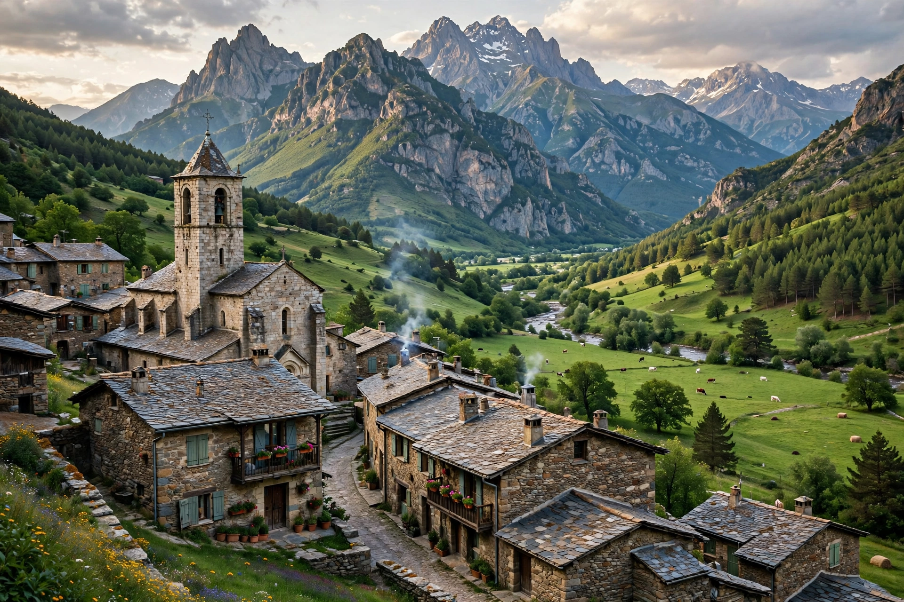

Aragonese (aragonés) is a Romance language spoken in several dialects by about 10,000 to 30,000 people in the Pyrenees valleys of Aragon, Spain, primarily in the comarcas of Somontano de Barbastro, Jacetania, Alto Gállego, Sobrarbe, and Ribagorza. It is the only modern language that has survived from medieval Navarro-Aragonese, in a form distinct from Spanish.

| Aragonese | |
| Native to | Aragon, Spain |
|---|---|
| Speakers | ~10,000–30,000 (estimates vary; many more passive speakers) |
| Language family | Indo-European → Italic → Romance → Western Romance → Pyrenean-Mozarabic |
| Language code | ISO 639: an |
The language originated in the central Pyrenees in the 8th century as one of the many Latin dialects of the region. As the Kingdom of Aragon expanded southward during the Reconquista, Aragonese spread across the kingdom but gradually retreated before Castilian Spanish, which became the language of the court by the 15th century. By the 19th and 20th centuries Aragonese survived mainly in rural northern valleys, and transmission to children weakened sharply under Franco and urbanization.
Aragonese is classified by UNESCO as an endangered language. It is not co-official in Aragon but is legally recognized as a language proper to the region; the 2009 Languages Act of Aragon and the 2013 revision gave it a measure of institutional protection. Efforts at standardization produced a common orthography (the "grafía de Huesca," 1987, and later the Academia de l'Aragonés's 2010 proposal), and the language is taught optionally in some northern schools. A Wikipedia edition in Aragonese (the Biquipedia) exists.
Aragonese preserves features lost in Spanish, such as initial Latin F- (e.g. fillo "son," cf. Spanish hijo), the palatal outcomes of Latin -CT- as -it- (feito "done"), and distinct definite articles (o, a, os, as) in many dialects.